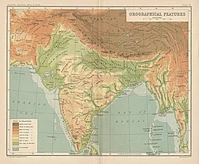

Geography

India accounts for the bulk of the Indian subcontinent, lying atop the Indian tectonic plate, a part of the Indo-Australian Plate. India's defining geological processes began 75 million years ago when the Indian Plate, then part of the southern supercontinent Gondwana, began a north-eastward drift caused by seafloor spreading to its south-west, and later, south and south-east. Simultaneously, the vast Tethyan oceanic crust, to its northeast, began to subduct under the Eurasian Plate. These dual processes, driven by convection in the Earth's mantle, both created the Indian Ocean and caused the Indian continental crust eventually to under-thrust Eurasia and to uplift the Himalayas. Immediately south of the emerging Himalayas, plate movement created a vast trough that rapidly filled with river-borne sediment and now constitutes the Indo-Gangetic Plain. Cut off from the plain by the ancient Aravalli Range lies the Thar Desert.
The original Indian Plate survives as peninsular India, the oldest and geologically most stable part of India. It extends as far north as the Satpura and Vindhya ranges in central India. These parallel chains run from the Arabian Sea coast in Gujarat in the west to the coal-rich Chota Nagpur Plateau in Jharkhand in the east. To the south, the remaining peninsular landmass, the Deccan Plateau, is flanked on the west and east by coastal ranges known as the Western and Eastern Ghats; the plateau contains the country's oldest rock formations, some over one billion years old. Constituted in such fashion, India lies to the north of the equator between 6° 44′ and 35° 30′ north latitude and 68° 7′ and 97° 25′ east longitude.
India's coastline measures 7,517 kilometres (4,700 mi) in length; of this distance, 5,423 kilometres (3,400 mi) belong to peninsular India and 2,094 kilometres (1,300 mi) to the Andaman, Nicobar, and Lakshadweep island chains. According to the Indian naval hydrographic charts, the mainland coastline consists of the following: 43% sandy beaches; 11% rocky shores, including cliffs; and 46% mudflats or marshy shores.
Major Himalayan-origin rivers that substantially flow through India include the Ganges and the Brahmaputra, both of which drain into the Bay of Bengal. Important tributaries of the Ganges include the Yamuna and the Kosi; the latter's extremely low gradient, caused by long-term silt deposition, leads to severe floods and course changes. Major peninsular rivers, whose steeper gradients prevent their waters from flooding, include the Godavari, the Mahanadi, the Kaveri, and the Krishna, which also drain into the Bay of Bengal; and the Narmada and the Tapti, which drain into the Arabian Sea. Coastal features include the marshy Rann of Kutch of western India and the alluvial Sundarbans delta of eastern India; the latter is shared with Bangladesh. India has two archipelagos: the Lakshadweep, coral atolls off India's south-western coast; and the Andaman and Nicobar Islands, a volcanic chain in the Andaman Sea.
The Indian climate is strongly influenced by the Himalayas and the Thar Desert, both of which drive the economically and culturally pivotal summer and winter monsoons. The Himalayas prevent cold Central Asian katabatic winds from blowing in, keeping the bulk of the Indian subcontinent warmer than most locations at similar latitudes. The Thar Desert plays a crucial role in attracting the moisture-laden south-west summer monsoon winds that, between June and October, provide the majority of India's rainfall. Four major climatic groupings predominate in India: tropical wet, tropical dry, subtropical humid, and montane.
Temperatures in India have risen by 0.7 °C (1.3 °F) between 1901 and 2018. Climate change in India is often thought to be the cause. The retreat of Himalayan glaciers has adversely affected the flow rate of the major Himalayan rivers, including the Ganges and the Brahmaputra. According to some current projections, the number and severity of droughts in India will have markedly increased by the end of the present century.
For previous page
click here